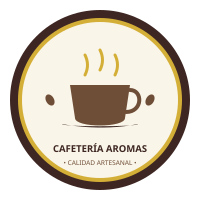

6. Gráficas vectoriales e identidad
Insignia oficial
Esta insignia representa nuestra pasión por el café recién elaborado. El diseño en SVG incluye el vapor animado de la taza y detalles vectoriales en tonos cálidos.
7. Logotipo vectorial externo

Versión en archivo SVG externo de la marca Cafetería Aromas.